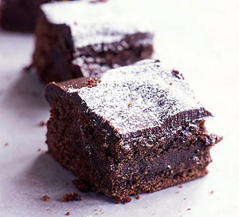

Brownies Recipe

Description
A gooey and delicious treat, these brownies are so easy to make. Try the rich chocolate topping for an even more decadent bake
Ingredients
- 375g good quality dark chocolate
- 375g butter, cut into pieces
- 500g caster sugar
- 6 medium eggs
- 225g plain flour
Steps
- Butter and line a 30cm x 21cm tin. Preheat the oven to 180C/160C fan/gas 4. Break up the chocolate with the butter and melt in the microwave on medium for about 5 minutes, stirring halfway through.
- Beat the sugar and eggs in a bowl. Stir in the melted chocolate, add the flour and beat well. Pour into the tin and bake for 40-45 minutes, or until the top looks papery and feels slightly wobbly. Leave to cool in the tin.
- If you're making the topping, break up the chocolate with the butter and melt in the microwave on medium for about 1 minute. Stir until smooth then spread over the cake. Dust with icing sugar and cut into squares.